1、购买B2C应用
商户可以去“应用市场”中购买B2C商城应用，购买成功后，可以从“我的应用”进入B2C商城。如下图1：
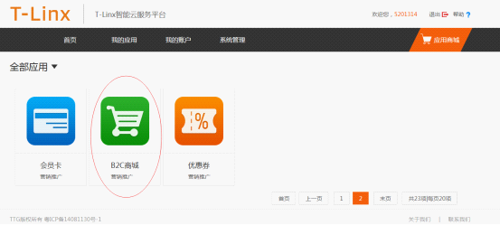
图1
2、B2C商城创建店铺
购买B2C商城应用成功后，商户可以登录PC端“智能云服务平台”进入B2C商城应用建立自己的店铺。进入云服务平台后，打开“我的应用”，点击“B2C商城”图标，如下图2所示：
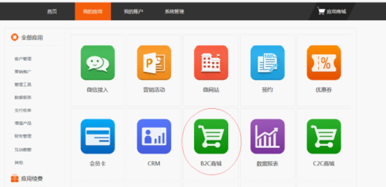
图2
点击“B2C商城”图标后，若商户未创建店铺，页面会提示商户“去创建店铺”（若已经建店，直接打开该应用，在左侧导航栏打开“店铺中心”--“店铺资料设置”）进入设置店铺界面，如下图3、4所示：
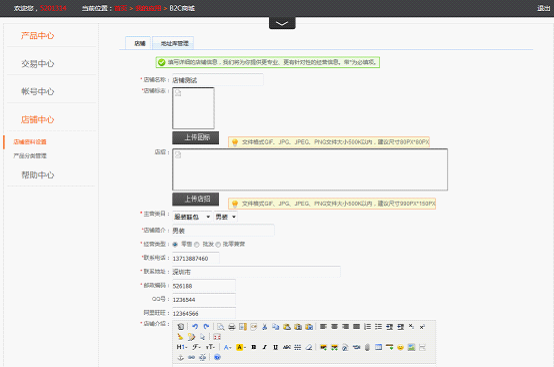
图3 店铺设置
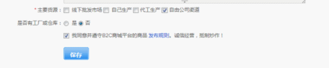
图4 店铺设置
按照页面要求和提示完成设置后点击保存，注意红色*为必填项，保存成功即创建店铺成功。
3、产品分类
店铺创建完毕，需要对产品分类进行设置，该系统采用两级分类，商户可以按要求对分类名编辑，在左侧导航栏打开“店铺中心”--“产品分类管理”，如下图5所示
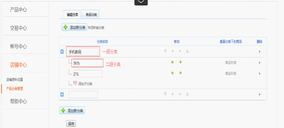
图5 产品分类
4、发布产品（即出售产品）
编辑好产品分类后，就可以发布产品了，在左侧导航栏打开“产品中心”--“发布产品”，如下图6所示：
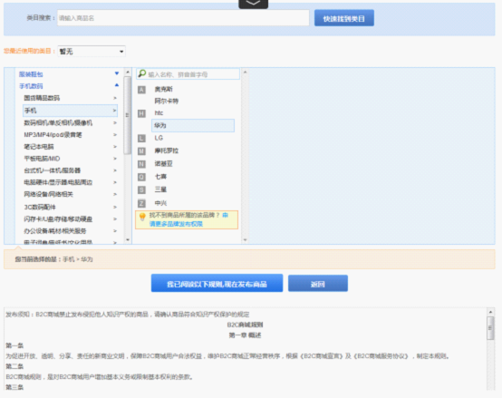
图6 发布产品
在类目中选择所发布商品对应的分类，点击“我已阅读规则，现在发布商品”点击后，跳转到商品录入界面，如下图7、8、9所示：
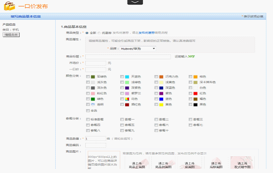
图7 发布产品
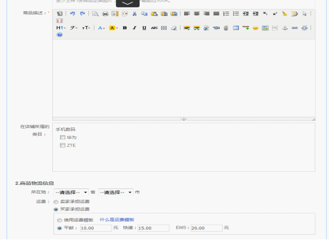
图8 发布产品
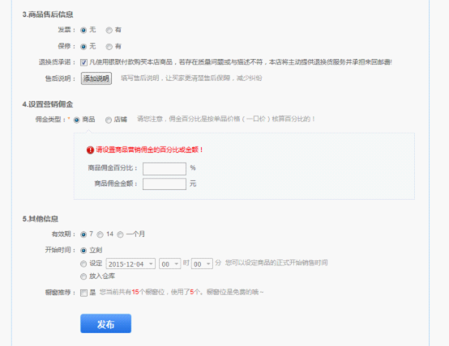
图9 发布产品
即可成功发布该产品，通常30分钟后才能在店铺、分类、搜索中显示。发布成功后即显示在“出售中的产品“栏目中。
5、管理产品
5.1查看出售中的产品
产品“发布”成功后，即可在左侧导航栏“出售中的产品”中查看到，出售中的商品，可以进行的操作有：
◆ 下架：对选中的商品进行暂时下架处理
◆ 橱窗推荐：对选中的商品进行精准的推广营销，增加商品曝光
◆ 取消推荐：对已经推荐的商品取消推荐操作
◆ 编辑商品：可随时对该商品进行重新编辑
◆ 复制连接：复制该商品连接地址，对商品进行推广
如下图10所示：
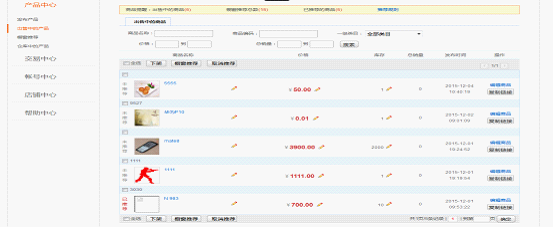
图10 出售中的产品
5.2橱窗推荐
对出售中的商品若选择“橱窗推荐”操作，可进行精准的推广营销，增加商品曝光，打开左侧导航栏“橱窗推荐”查看所有推荐的商品，橱窗推荐中的商品可进行的操作有：
◆ 推荐、取消推荐
如下图11所示：
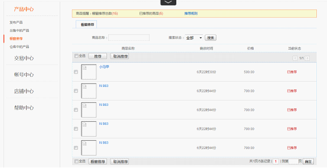
图11 橱窗推荐
5.3仓库中的产品
出售中的商品，下架后、卖完的商品或者违规的商品会存放在“仓库中的商品”中，对仓库中的商品可进行的操作有：删除、上架、编辑、
◆ 删除：删除掉该商品
◆ 上架：上架后，该商品继续出售
◆ 编辑：若商品库存不足，可修改商品库存。编辑商品后可继续上架
如下图12所示：
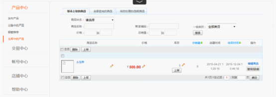
图12 仓库中的产品
6、已卖出的产品
6.1发货
顾客在POS端完成商品购买成功付款后，操作详见POS端操作流程，商户可在商户后台左侧导航栏“交易中心--发货--待发货的订单”或者“交易中心--已卖出的产品”进行发货，点击发货确认发货信息是否正确，输入物流信息后，点击确认即完成发货，如下图13、14、15所示：
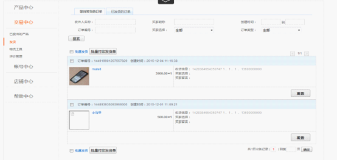
图13 待发货的商品
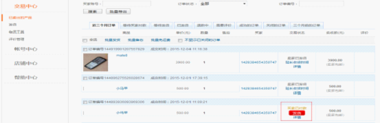
图14 已卖出的商品
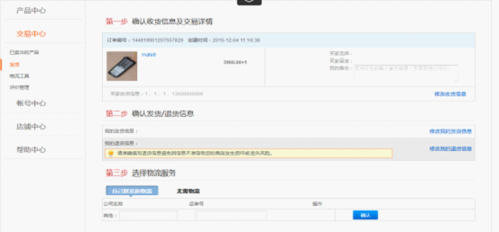
图15 发货
完成发货后，该商品会保存在已发货的订单中。如下图16所示：
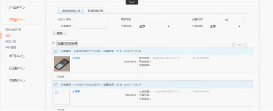
图16已发货
卖家发货后，可以根据实际情况选择延长收货时间，在“交易中心--已卖出的产品”订单中点击延长收货时间即可。如图17所示：
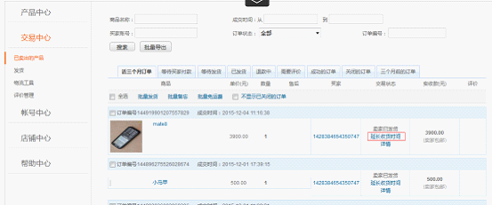
图17 延长收货时间
6.2物流工具
卖家可以根据发货需要设置运费模板。选择合适的运送方式，完成设置后点击保存。如图18所示：
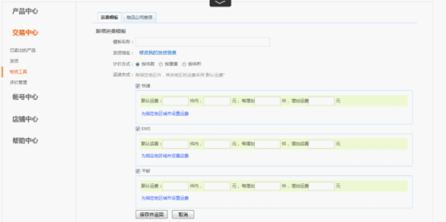
图18 物流工具
7、账号中心
商家可在账户中心修改登录密码和设置支付密码，如下图19所示：
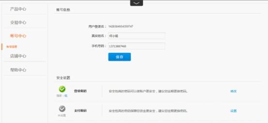
图19 账号中心